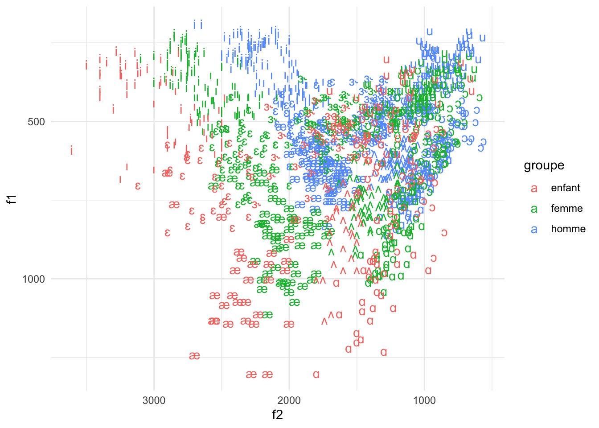
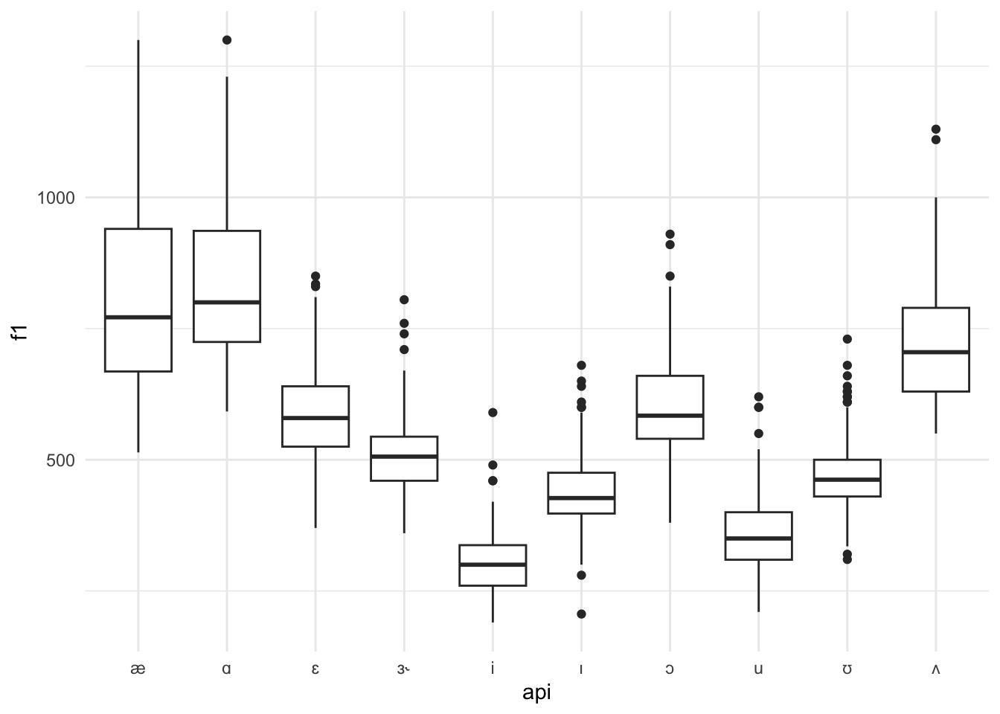
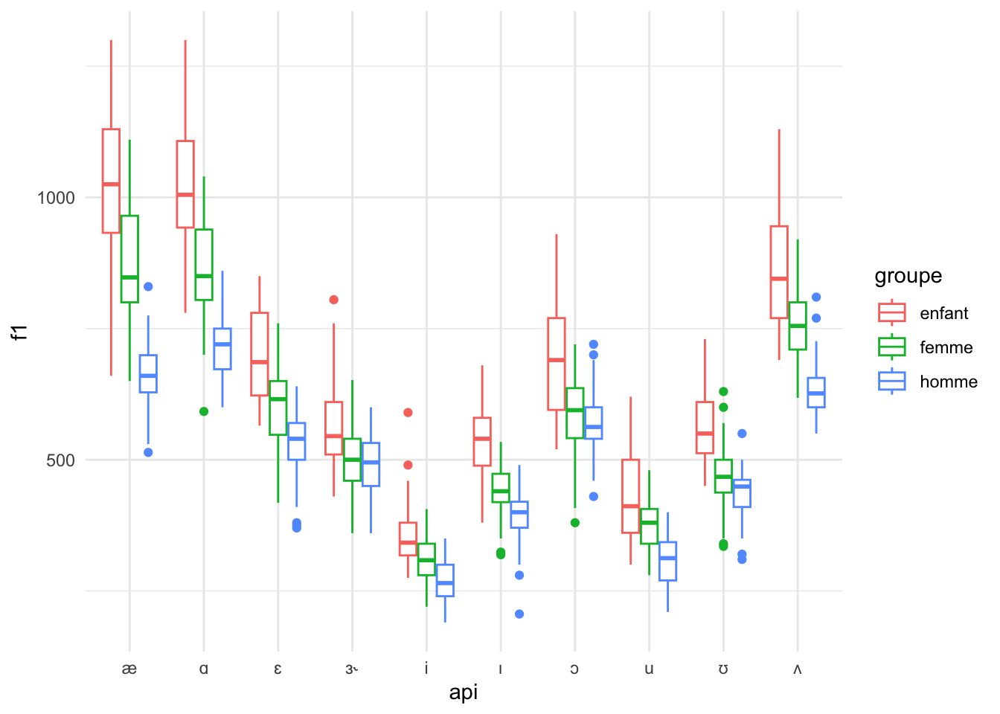
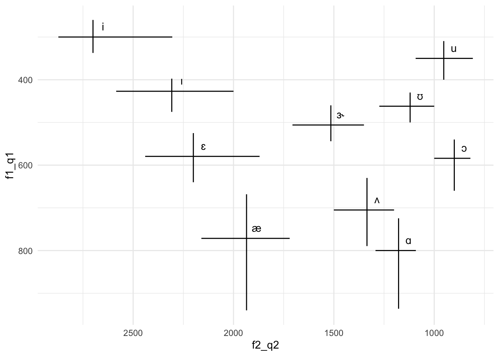
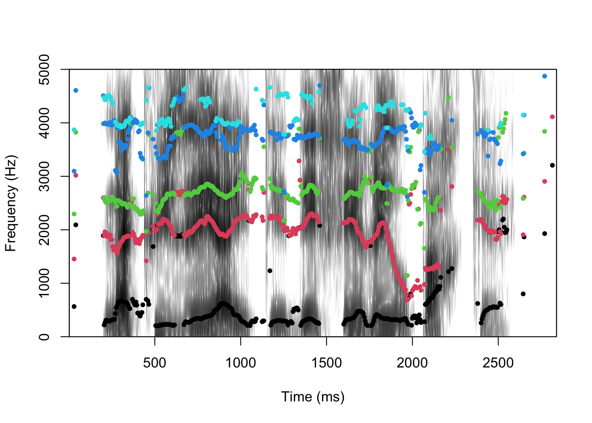
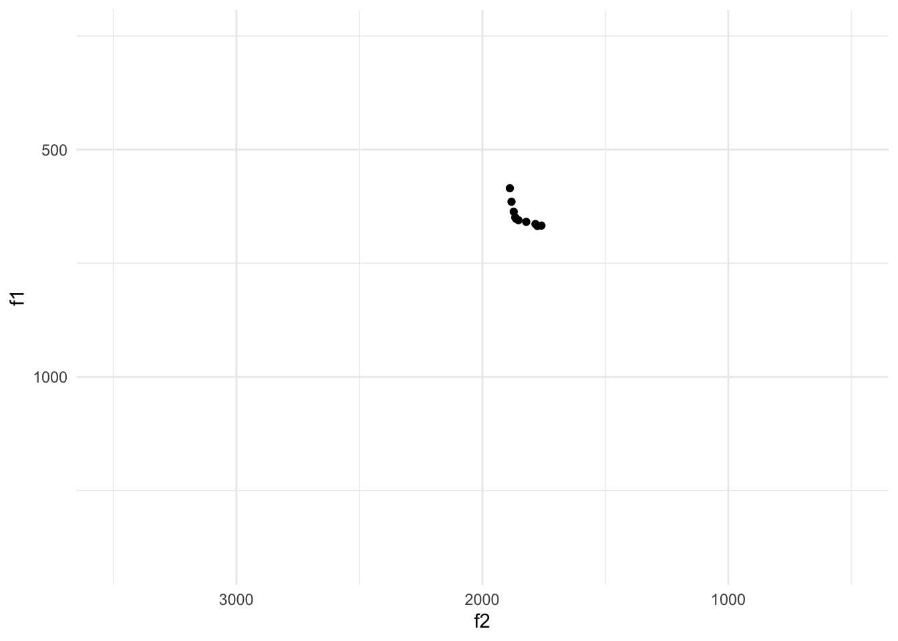
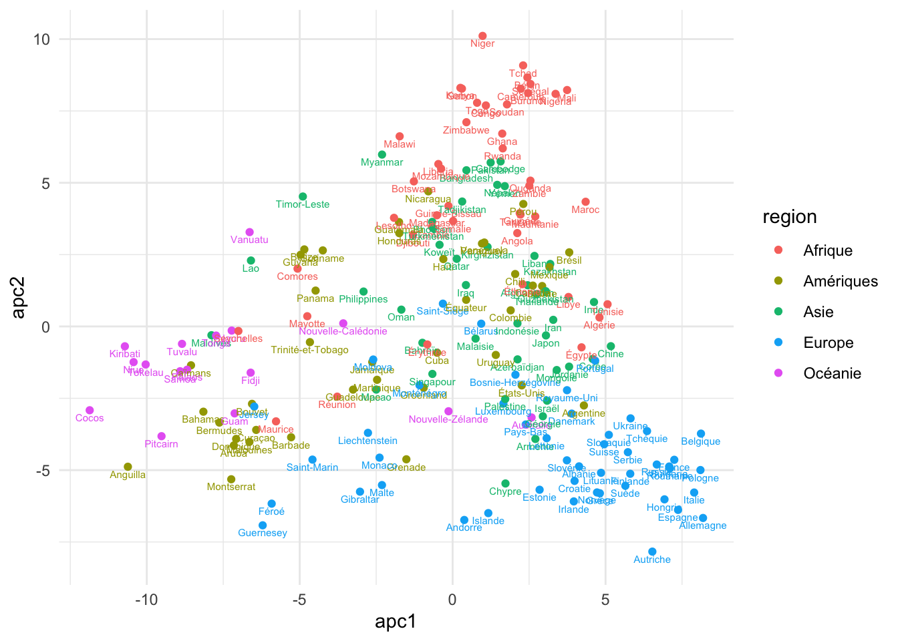
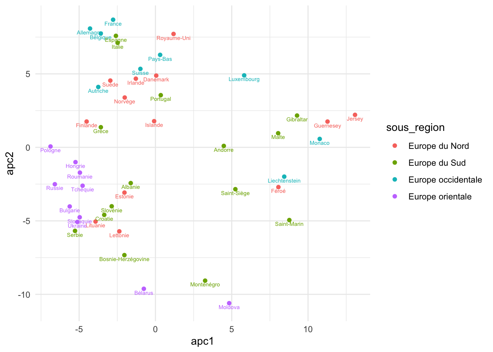
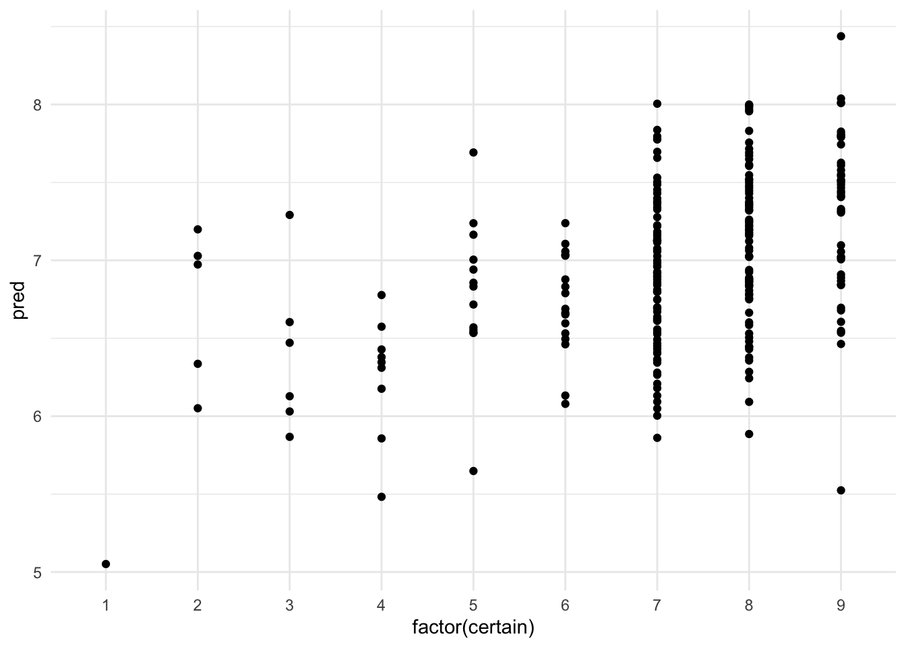

# keep
knitr::opts_chunk$set(warning = FALSE, message = FALSE)Exercices pour atelier : R pour la linguistique
🇬🇧
EN
2. Configuration
Vous devez exécuter le code ci-dessous pour vérifier, puis si nécessaire télécharger et charger, les packages nécessaires aux exercices.
# keep
source("funs.R")
verifier_packages(c("tidyverse", "glmnet", "tuneR", "phonTools", "umap", "dtw", "udpipe", "readtextgrid", "stringi"))Le code ci-dessous configure les paramètres nécessaires à notre travail.
# keep
options(dplyr.summarise.inform = FALSE)
theme_set(theme_minimal())
Sys.setenv(LANG = "fr")3. Données tabulaires
Dans le «bloc» de code ci-dessous, télécharchez des données donnees/peterson_barney_voyelle_eng.csv sauvegardez le tibble dans l’objet phone et regardez les données. Comparez ce tableau avec le tableau figurant dans les notes.
phone <- read_csv2("donnees/peterson_barney_voyelle_eng.csv")
phone# A tibble: 1,520 × 9
id groupe genre api xsampa f0 f1 f2 f3
<dbl> <chr> <chr> <chr> <chr> <dbl> <dbl> <dbl> <dbl>
1 1 homme masculin i i 160 240 2280 2850
2 1 homme masculin i i 186 280 2400 2790
3 1 homme masculin ɪ I 203 390 2030 2640
4 1 homme masculin ɪ I 192 310 1980 2550
5 1 homme masculin ɛ E 161 490 1870 2420
6 1 homme masculin ɛ E 155 570 1700 2600
7 1 homme masculin æ { 140 560 1820 2660
8 1 homme masculin æ { 180 630 1700 2550
9 1 homme masculin ʌ V 144 590 1250 2620
10 1 homme masculin ʌ V 148 620 1300 2530
# ℹ 1,510 more rows4. Visualiser
Créez une visualisation de tibble phone de F2 et F1 dans la même forme que dans les notes, mais appliquez les couleur pour indiquer la groupe. Si vouz avez des problèmes avec les symboles sur votre ordinateur, utilisez la colonne xsampa au lieu d’API.
phone |>
ggplot() +
geom_text(aes(x=f2, y=f1, label=api, colour=groupe)) +
scale_x_reverse() +
scale_y_reverse()
Creez un « boites à moustaches » (boxplot en anglais) pour les valeurs F1 selon les symboles API avec la géométrie geom_boxplot. Donnez simplement des esthétiques x et y.
phone |>
ggplot() +
geom_boxplot(aes(x=api, y=f1))
Posez vos questions si vous ne comprenez pas la signification de chaque partie d’un «boxplot» !
Créez une visualization d’un «boxplot» comme ci-dessus, mais cette fois ajoutez une esthétique de la couleur associée à la colonne groupe. Faites attention aux résultats.
phone |>
ggplot() +
geom_boxplot(aes(x=api, y=f1, colour=groupe))
Copiez le code ci-dessus, puis remplacez l’estétique «colour» par «fill».
phone |>
ggplot() +
geom_boxplot(aes(x=api, y=f1, fill=groupe))
C’est quoi la différence entre «colour» et «fill» dans la grammaire des graphiques?
5. Manipuler un tableau
Sélectionnez les 5 lignes ayant les valeurs F1 les plus élevées.
phone |>
arrange(f1) |>
slice_head(n=5)# A tibble: 5 × 9
id groupe genre api xsampa f0 f1 f2 f3
<dbl> <chr> <chr> <chr> <chr> <dbl> <dbl> <dbl> <dbl>
1 19 homme masculin i i 129 190 2650 3280
2 19 homme masculin i i 135 190 2700 3170
3 8 homme masculin ɪ I 103 206 2130 2570
4 2 homme masculin i i 148 210 2360 3250
5 18 homme masculin i i 124 210 2100 3090Sélectionnez les 5 lignes ayant les valeurs F1 les plus basses.
phone |>
arrange(desc(f1)) |>
slice_head(n=5)# A tibble: 5 × 9
id groupe genre api xsampa f0 f1 f2 f3
<dbl> <chr> <chr> <chr> <chr> <dbl> <dbl> <dbl> <dbl>
1 62 enfant <NA> ɑ A 200 1300 1800 3450
2 74 enfant masculin æ { 260 1300 2280 3130
3 74 enfant masculin æ { 260 1300 2160 3300
4 67 enfant <NA> æ { 214 1240 2700 3640
5 74 enfant masculin ɑ A 250 1230 1300 3200Selectionez les lignes qui ne sont pas associées aux hommes en appliquons le symbole != au lieu de ==.
phone |>
filter(groupe != "homme")# A tibble: 860 × 9
id groupe genre api xsampa f0 f1 f2 f3
<dbl> <chr> <chr> <chr> <chr> <dbl> <dbl> <dbl> <dbl>
1 34 femme <NA> i i 230 370 2670 3100
2 34 femme <NA> i i 234 390 2760 3060
3 34 femme <NA> ɪ I 234 468 2330 2930
4 34 femme <NA> ɪ I 205 410 2380 2950
5 34 femme <NA> ɛ E 190 550 2200 2880
6 34 femme <NA> ɛ E 191 570 2100 3040
7 34 femme <NA> æ { 200 800 1980 2810
8 34 femme <NA> æ { 192 860 1920 2850
9 34 femme <NA> ʌ V 227 635 1200 3250
10 34 femme <NA> ʌ V 200 700 1200 3100
# ℹ 850 more rowsCréez de nouvelles variables qui donnent la différence entre F1 et F0 et entre F2 et F1. Elles sont parfois utiles pour comprendre les qualités perçues des voyelles.
phone |>
filter(groupe != "homme")# A tibble: 860 × 9
id groupe genre api xsampa f0 f1 f2 f3
<dbl> <chr> <chr> <chr> <chr> <dbl> <dbl> <dbl> <dbl>
1 34 femme <NA> i i 230 370 2670 3100
2 34 femme <NA> i i 234 390 2760 3060
3 34 femme <NA> ɪ I 234 468 2330 2930
4 34 femme <NA> ɪ I 205 410 2380 2950
5 34 femme <NA> ɛ E 190 550 2200 2880
6 34 femme <NA> ɛ E 191 570 2100 3040
7 34 femme <NA> æ { 200 800 1980 2810
8 34 femme <NA> æ { 192 860 1920 2850
9 34 femme <NA> ʌ V 227 635 1200 3250
10 34 femme <NA> ʌ V 200 700 1200 3100
# ℹ 850 more rowsquantile est une autre fonction qu’on applique souvent dans la fonction summarise. On donne un argument probs, qui est un nombre entre 0 et 1. Le résultat est la valeur pour laquelle probs pour cent des données sont inférieures et 1-probs pour cent des données sont supérieures. Par example, quantile(f1, probs=0.5) donne la même chose que la fonction median(). Dans le code ci-dessous, créez un tableau avec une colonne f1_q1 qui donne le quantile avec probabilité 0.25 selon chaque symbole API.
phone |>
group_by(api) |>
summarise(
f1_q1 = quantile(f1, probs=0.25)
)# A tibble: 10 × 2
api f1_q1
<chr> <dbl>
1 i 260
2 u 310.
3 æ 668.
4 ɑ 724.
5 ɔ 540
6 ɛ 525
7 ɜ˞ 460
8 ɪ 398.
9 ʊ 430
10 ʌ 630 Continuez de créer les colonnes f1_q1, f1_q2, f1_q3, f2_q1, f2_q2, f2_q3 avec les probs 0.25, 0.50 et 0.75. Sauvgardez les résultats dans un nouveau object phone_quant.
phone_quant <- phone |>
group_by(api) |>
summarise(
f1_q1 = quantile(f1, probs=0.25),
f1_q2 = quantile(f1, probs=0.50),
f1_q3 = quantile(f1, probs=0.75),
f2_q1 = quantile(f2, probs=0.25),
f2_q2 = quantile(f2, probs=0.50),
f2_q3 = quantile(f2, probs=0.75)
)
phone_quant# A tibble: 10 × 7
api f1_q1 f1_q2 f1_q3 f2_q1 f2_q2 f2_q3
<chr> <dbl> <dbl> <dbl> <dbl> <dbl> <dbl>
1 i 260 300 337. 2305 2700 2872.
2 u 310. 350 400 808. 952. 1092.
3 æ 668. 772. 940 1720 1935 2160
4 ɑ 724. 800 936. 1092. 1178. 1292.
5 ɔ 540 584 660 820. 900 1000
6 ɛ 525 580. 640 1870 2200 2440
7 ɜ˞ 460 506 544 1350 1515 1706.
8 ɪ 398. 427 475. 2000 2308. 2584.
9 ʊ 430 462 500 1000 1120 1274.
10 ʌ 630 705 790. 1200 1335 1500 Pour aller plus loin Il y a une géométrie geom_segment qui a quatre esthétiques obligatoires: x, xend, y et yend. Cette géométrie crée des segments de ligne. Créez une visualisation des valeurs F1 et F2 en utilisant les quantiles.
phone_quant |>
ggplot() +
geom_segment(aes(x=f2_q2, xend=f2_q2, y=f1_q1, yend=f1_q3)) +
geom_segment(aes(x=f2_q1, xend=f2_q3, y=f1_q2, yend=f1_q2)) +
geom_text(aes(x=f2_q2 - 50, y=f1_q2 - 25, label=api)) +
scale_x_reverse() +
scale_y_reverse()
6. Les modèles statistiques
Télécharger les données avec le code ci-dessous.
# keep
mots <- read_csv2("donnees/keylog-mots.csv.bz2")
mots# A tibble: 210,337 × 6
id mot char_mot dur_mot d1 d2
<chr> <chr> <dbl> <dbl> <dbl> <dbl>
1 R_00RbUqO7jXLDItP If 2 312. 928. 848.
2 R_00RbUqO7jXLDItP I 1 80.2 1600. 1520
3 R_00RbUqO7jXLDItP could 5 1576. 2168. 2088.
4 R_00RbUqO7jXLDItP choose 6 945. 976. 904.
5 R_00RbUqO7jXLDItP to 2 200. 930. 849.
6 R_00RbUqO7jXLDItP be 2 151 528. 456.
7 R_00RbUqO7jXLDItP any 3 440. 264 168.
8 R_00RbUqO7jXLDItP animal 6 1560 976. 888
9 R_00RbUqO7jXLDItP for 3 264. 248 176.
10 R_00RbUqO7jXLDItP one 3 312 1120. 1048.
# ℹ 210,327 more rowsCreéz un object mots_sub de mot qui ne contient que les mots “the” et “and”.
mots_sub <- mots |>
filter(mot %in% c("the", "and"))Faites un «test de Student» qui teste la différence de durée entre taper “the” et taper “and”.
t.test(dur_mot ~ mot, data = mots_sub)
Welch Two Sample t-test
data: dur_mot by mot
t = 5.737, df = 11711, p-value = 9.875e-09
alternative hypothesis: true difference in means between group and and group the is not equal to 0
95 percent confidence interval:
30.80760 62.78572
sample estimates:
mean in group and mean in group the
399.9284 353.1317 Faites un «régression linéaire» qui prédit la durée d’un mot en fonction de sa longueur en caractères.
summary(lm(dur_mot ~ char_mot, data = mots))
Call:
lm(formula = dur_mot ~ char_mot, data = mots)
Residuals:
Min 1Q Median 3Q Max
-11151 -851 -236 268 2575323
Coefficients:
Estimate Std. Error t value Pr(>|t|)
(Intercept) -1154.388 34.892 -33.09 <2e-16 ***
char_mot 557.574 6.727 82.89 <2e-16 ***
---
Signif. codes: 0 '***' 0.001 '**' 0.01 '*' 0.05 '.' 0.1 ' ' 1
Residual standard error: 8453 on 210335 degrees of freedom
Multiple R-squared: 0.03163, Adjusted R-squared: 0.03162
F-statistic: 6870 on 1 and 210335 DF, p-value: < 2.2e-16Interprétez les résultats. Sont-ils statistiquement significatifs ?
7. Plusieurs tableaux
Télécharger les données avec le code ci-dessous.
meta <- read_csv2("donnees/keylog-meta.csv.bz2")
meta# A tibble: 823 × 4
id age lang cefr
<chr> <dbl> <chr> <chr>
1 R_2EGIsZARLydD3Uc 25 Italian C1/C2
2 R_1obCaysaZCWZXoG 22 Spanish B1/B2
3 R_3fqTek829k38iCk 22 Polish B1/B2
4 R_brxD7Q5ZnPW8Gn7 43 English C1/C2
5 R_1k1RE78cBbZyZMA 23 Polish B1/B2
6 R_1NwuZMzRkVIR0WT 32 English C1/C2
7 R_2t8LOS9nQDBQPA8 24 Spanish C1/C2
8 R_239Q0X5YLwB7U6Z 28 English C1/C2
9 R_10xbkjEmnsusfb1 32 Polish B1/B2
10 R_10CbLBzAnYKgWxB 21 Polish B1/B2
# ℹ 813 more rowsTélécharger un autre tableau avec :
langs <- read_csv2("donnees/langs.csv")
langs# A tibble: 8 × 2
lang groupe
<chr> <chr>
1 Polish slaves
2 English germanique
3 German germanique
4 Greek hellénique
5 French romane
6 Italian romane
7 Portuguese romane
8 Spanish romane Combinez les données meta et langs à l’aide de la fonction left_join.
meta |>
left_join(langs, by = "lang")# A tibble: 823 × 5
id age lang cefr groupe
<chr> <dbl> <chr> <chr> <chr>
1 R_2EGIsZARLydD3Uc 25 Italian C1/C2 romane
2 R_1obCaysaZCWZXoG 22 Spanish B1/B2 romane
3 R_3fqTek829k38iCk 22 Polish B1/B2 slaves
4 R_brxD7Q5ZnPW8Gn7 43 English C1/C2 germanique
5 R_1k1RE78cBbZyZMA 23 Polish B1/B2 slaves
6 R_1NwuZMzRkVIR0WT 32 English C1/C2 germanique
7 R_2t8LOS9nQDBQPA8 24 Spanish C1/C2 romane
8 R_239Q0X5YLwB7U6Z 28 English C1/C2 germanique
9 R_10xbkjEmnsusfb1 32 Polish B1/B2 slaves
10 R_10CbLBzAnYKgWxB 21 Polish B1/B2 slaves
# ℹ 813 more rowsComme décrit dans les notes, combinez mots et meta. Puis, combinez avec langs et calculez la médiane de d1. Sortez les lignes par les médianes.
mots |>
left_join(meta, by = "id") |>
left_join(langs, by = "lang") |>
group_by(groupe) |>
summarise(mu = median(d1)) |>
arrange(desc(mu))# A tibble: 4 × 2
groupe mu
<chr> <dbl>
1 hellénique 608.
2 slaves 520
3 romane 496.
4 germanique 436 8. Fenêtres glissantes
Télécharger les données avec le code ci-dessous.
touches <- read_csv2("donnees/keylog-touches.csv.bz2", na="NA")
touches# A tibble: 1,145,051 × 7
id t0 t1 dur dur_apres touche code
<chr> <dbl> <dbl> <dbl> <dbl> <chr> <chr>
1 R_00RbUqO7jXLDItP 20914. 20978. 64.4 80.1 "I" KeyI
2 R_00RbUqO7jXLDItP 21146. 21226. 80.1 55.8 "f" KeyF
3 R_00RbUqO7jXLDItP 21234. 21290. 55.8 80.2 "" Space
4 R_00RbUqO7jXLDItP 22074. 22154. 80.2 88.2 "I" KeyI
5 R_00RbUqO7jXLDItP 22306. 22394. 88.2 64.3 "" Space
6 R_00RbUqO7jXLDItP 23674. 23739. 64.3 56.1 "c" KeyC
7 R_00RbUqO7jXLDItP 23818. 23874. 56.1 46.6 "o" KeyO
8 R_00RbUqO7jXLDItP 24044. 24090. 46.6 64 "u" KeyU
9 R_00RbUqO7jXLDItP 25066. 25130. 64 79.8 "l" KeyL
10 R_00RbUqO7jXLDItP 25170. 25250 79.8 72.3 "d" KeyD
# ℹ 1,145,041 more rowsUtilisez la fonction lead de creer un nouvelle colonne space_apres qui indique si le prochain touche et un espace. Puis, utilisez filter pour sélectionner les lignes qui ne sont pas des espaces elle-mêmes. Calculez la durée médiane d’une frappe selon la présence d’un espace après celui-ci.
touches |>
mutate(space_apres = lead(code) == "Space") |>
filter(code != "Space") |>
filter(!is.na(space_apres)) |>
group_by(space_apres) |>
summarise(
dur_moyenne = median(dur_apres)
)# A tibble: 2 × 2
space_apres dur_moyenne
<lgl> <dbl>
1 FALSE 75.1
2 TRUE 79 9. Chaînes de caractères
Télécharger les données avec le code ci-dessous.
noms <- read_csv2("donnees/lexique_noms.csv")
noms# A tibble: 27,318 × 3
lemme genre freq
<chr> <chr> <dbl>
1 homme m 1399.
2 jour m 1342.
3 temps m 1289.
4 oeil m 1235.
5 fois f 1140
6 chose f 1058.
7 peu m 1023.
8 femme f 996.
9 heure f 924.
10 tête f 923.
# ℹ 27,308 more rowsUtilisez la fonction stri_extract pour créer une nouvelle colonne ter qui a le dernier caractère de chaque mot. Calculez la proportion de noms féminins pour chaque lettre terminale, filtrez en fonction des lettres comportant au moins 10 mots et classez les résultats par ordre décroissant de la proportion de noms féminins.
noms |>
mutate(ter = stri_extract(lemme, regex="\\w\\Z")) |>
group_by(ter) |>
summarise(
prop_f = mean(genre == "f"),
n = n()
) |>
filter(n > 10) |>
arrange(desc(prop_f))# A tibble: 24 × 3
ter prop_f n
<chr> <dbl> <int>
1 é 0.675 1233
2 e 0.625 11635
3 n 0.529 3507
4 a 0.399 637
5 w 0.182 11
6 p 0.152 99
7 y 0.149 121
8 x 0.122 229
9 s 0.0944 1102
10 b 0.0943 53
# ℹ 14 more rows10. TextGrid
Télécharger un fichier de rhapsodie avec le code ci-dessous.
# keep
tg <- read_textgrid(
"donnees/rhapsodie/tg/Rhap-D0001-Pro.TextGrid",
encoding="UTF-8"
)
tg# A tibble: 10,546 × 10
file tier_num tier_name tier_type tier_xmin tier_xmax xmin xmax text
<chr> <int> <chr> <chr> <dbl> <dbl> <dbl> <dbl> <chr>
1 Rhap-D000… 1 phone Interval… 0 330. 0 2.23 _
2 Rhap-D000… 1 phone Interval… 0 330. 2.23 2.27 e
3 Rhap-D000… 1 phone Interval… 0 330. 2.27 2.42 s
4 Rhap-D000… 1 phone Interval… 0 330. 2.42 2.45 k
5 Rhap-D000… 1 phone Interval… 0 330. 2.45 2.48 @
6 Rhap-D000… 1 phone Interval… 0 330. 2.48 2.54 v
7 Rhap-D000… 1 phone Interval… 0 330. 2.54 2.65 u
8 Rhap-D000… 1 phone Interval… 0 330. 2.65 2.68 p
9 Rhap-D000… 1 phone Interval… 0 330. 2.68 2.74 u
10 Rhap-D000… 1 phone Interval… 0 330. 2.74 2.82 R
# ℹ 10,536 more rows
# ℹ 1 more variable: annotation_num <int>Créez un object locuteur qui ne contient que le «tier» “locuteur”.
locuteur <- tg |>
filter(tier_name == "locuteur")
locuteur# A tibble: 91 × 10
file tier_num tier_name tier_type tier_xmin tier_xmax xmin xmax text
<chr> <int> <chr> <chr> <dbl> <dbl> <dbl> <dbl> <chr>
1 Rhap-D000… 9 locuteur Interval… 0 330. 0 9.92 $L1
2 Rhap-D000… 9 locuteur Interval… 0 330. 9.92 11.0 $L2
3 Rhap-D000… 9 locuteur Interval… 0 330. 11.0 11.6 $L2-…
4 Rhap-D000… 9 locuteur Interval… 0 330. 11.6 16.9 $L2
5 Rhap-D000… 9 locuteur Interval… 0 330. 16.9 18.2 $L2-…
6 Rhap-D000… 9 locuteur Interval… 0 330. 18.2 21.1 $L2
7 Rhap-D000… 9 locuteur Interval… 0 330. 21.1 21.9 $L2-…
8 Rhap-D000… 9 locuteur Interval… 0 330. 21.9 36.9 $L2
9 Rhap-D000… 9 locuteur Interval… 0 330. 36.9 37.5 $L3-…
10 Rhap-D000… 9 locuteur Interval… 0 330. 37.5 38.3 $L3
# ℹ 81 more rows
# ℹ 1 more variable: annotation_num <int>Faites un sommaire qui compter les nombre de lignes pour chaque valeur de locuteur.
locuteur |>
group_by(text) |>
summarise(n = n())# A tibble: 9 × 2
text n
<chr> <int>
1 $L1 12
2 $L1-$L2 10
3 $L1-$L3 1
4 $L2 28
5 $L2-$L1 11
6 $L2-$L3 6
7 $L3 10
8 $L3-$L1 4
9 $L3-$L2 9En utilisant la fonction stri_count, créez une nouvelle colonne locuteur_nombre dans locuteur qui compte le nombre des signes “$”. Enregistrez les résultats à l’aide du symbole fléché
locuteur <- locuteur |>
mutate(locuteur_nombre = stri_count(text, fixed = "$"))
locuteur# A tibble: 91 × 11
file tier_num tier_name tier_type tier_xmin tier_xmax xmin xmax text
<chr> <int> <chr> <chr> <dbl> <dbl> <dbl> <dbl> <chr>
1 Rhap-D000… 9 locuteur Interval… 0 330. 0 9.92 $L1
2 Rhap-D000… 9 locuteur Interval… 0 330. 9.92 11.0 $L2
3 Rhap-D000… 9 locuteur Interval… 0 330. 11.0 11.6 $L2-…
4 Rhap-D000… 9 locuteur Interval… 0 330. 11.6 16.9 $L2
5 Rhap-D000… 9 locuteur Interval… 0 330. 16.9 18.2 $L2-…
6 Rhap-D000… 9 locuteur Interval… 0 330. 18.2 21.1 $L2
7 Rhap-D000… 9 locuteur Interval… 0 330. 21.1 21.9 $L2-…
8 Rhap-D000… 9 locuteur Interval… 0 330. 21.9 36.9 $L2
9 Rhap-D000… 9 locuteur Interval… 0 330. 36.9 37.5 $L3-…
10 Rhap-D000… 9 locuteur Interval… 0 330. 37.5 38.3 $L3
# ℹ 81 more rows
# ℹ 2 more variables: annotation_num <int>, locuteur_nombre <int>Calculez la durée totale selon chaque nombre de locuteur.
locuteur |>
group_by(locuteur_nombre) |>
summarise(
duree = sum(xmax - xmin)
)# A tibble: 2 × 2
locuteur_nombre duree
<int> <dbl>
1 1 274.
2 2 55.711. Programmer
Le code ci-dessous crée un objet répertoriant tous les fichiers contenant des dialogues tirés de Rhapsodie.
# keep
dir_nom <- "donnees/rhapsodie/tg/"
d <- dir(dir_nom, pattern="TextGrid$")
d <- d[stri_sub(d, 1, 6) == "Rhap-D"]En modifiant le code ci-dessous, enregistrez les informations relatives aux locuteurs de chaque fichier, y compris le nombre de locuteurs dans chaque point de données.
df <- list("vector", length(d))
for (j in seq_along(d)) {
tg <- read_textgrid(file.path(dir_nom, d[j]), encoding="UTF-8")
tg$id <- j
# ↓↓↓ cette partie ci-dessous fonctionne de traiter une seule
# ↓↓↓ fiche ; vous pouvez la changer
locuteur <- tg |>
filter(tier_name == "locuteur") |>
mutate(locuteur_nombre = stri_count(text, fixed = "$"))
res <- locuteur
# ↑↑↑
df[[j]] <- res
}
df <- bind_rows(df)
df# A tibble: 1,260 × 12
file tier_num tier_name tier_type tier_xmin tier_xmax xmin xmax text
<chr> <int> <chr> <chr> <dbl> <dbl> <dbl> <dbl> <chr>
1 Rhap-D000… 9 locuteur Interval… 0 330. 0 9.92 $L1
2 Rhap-D000… 9 locuteur Interval… 0 330. 9.92 11.0 $L2
3 Rhap-D000… 9 locuteur Interval… 0 330. 11.0 11.6 $L2-…
4 Rhap-D000… 9 locuteur Interval… 0 330. 11.6 16.9 $L2
5 Rhap-D000… 9 locuteur Interval… 0 330. 16.9 18.2 $L2-…
6 Rhap-D000… 9 locuteur Interval… 0 330. 18.2 21.1 $L2
7 Rhap-D000… 9 locuteur Interval… 0 330. 21.1 21.9 $L2-…
8 Rhap-D000… 9 locuteur Interval… 0 330. 21.9 36.9 $L2
9 Rhap-D000… 9 locuteur Interval… 0 330. 36.9 37.5 $L3-…
10 Rhap-D000… 9 locuteur Interval… 0 330. 37.5 38.3 $L3
# ℹ 1,250 more rows
# ℹ 3 more variables: annotation_num <int>, id <int>, locuteur_nombre <int>Calculez la durée totale pour chaque nombre d’intervenants dans l’ensemble de la collection.
df |>
group_by(locuteur_nombre) |>
summarise(
duree = sum(xmax - xmin)
)# A tibble: 3 × 2
locuteur_nombre duree
<int> <dbl>
1 0 3.96
2 1 6848.
3 2 422. 12. Données audio
Télécharger un fichier de format «wav» avec le code ci-dessous.
# keep
w <- readWave("donnees/phrase.wav")
snd <- makesound(w@left, fs = w@samp.rate)
snd
Sound Object
Read from file: w@left.wav
Sampling frequency: 44100 Hz
Duration: 2844.966 ms
Number of Samples: 125463 Créez un ensemble de données formants à l’aide de la fonction formanttrack.
formants <- formanttrack(snd, fs = fs)
Convertissez les données formants en tibble.
formants <- as_tibble(formants)
formants# A tibble: 383 × 6
time f1 f2 f3 f4 f5
<dbl> <dbl> <dbl> <dbl> <dbl> <dbl>
1 30.1 565. 1454. 2295. 3097. 3870.
2 40.1 2092. 3018. 3823. 4607. 0
3 100. 0 0 0 0 0
4 200. 1891. 2600. 3983. 4507. 0
5 205. 219. 1892. 2606. 3988. 4473.
6 210. 266. 1961. 2540. 3998. 4429.
7 215. 306. 1944. 2512. 3980. 4462.
8 220. 311. 1881. 2504. 3983. 4486.
9 225. 299. 1870. 2521. 3976. 4508.
10 230. 292. 1878. 2539. 3966. 4515.
# ℹ 373 more rowsJ’ai utilisé Praat pour localiser la première voyelle. Elle apparaît entre 300 et 350 millisecondes. Visualisez toutes les valeurs de formants de cette voyelle (un /a/) en utilisant le code similaire des premières sections.
formants |>
filter(time > 300 & time < 350) |>
ggplot() +
geom_point(aes(f2, f1)) +
scale_x_reverse(limits = c(500, 3500)) +
scale_y_reverse(limits = c(250, 1400))
13. Analyse grammaticale
Télécharger les données avec le code ci-dessous.
# keep
wikifr <- read_csv2("donnees/wiki_parsed.csv.bz2")
wikifr# A tibble: 2,431,081 × 11
doc_id sid tid token lemma pos xpos dep dep_head head morph
<chr> <dbl> <dbl> <chr> <chr> <chr> <chr> <chr> <dbl> <chr> <chr>
1 Arabie saoudi… 1 1 L l NOUN NOUN nsubj 10 mona… <NA>
2 Arabie saoudi… 1 2 , , PUNCT PUNCT punct 1 L <NA>
3 Arabie saoudi… 1 3 en en ADP ADP case 4 forme <NA>
4 Arabie saoudi… 1 4 forme forme NOUN NOUN nmod 1 L Gend…
5 Arabie saoudi… 1 5 long… long ADJ ADJ amod 4 forme Gend…
6 Arabie saoudi… 1 6 le le DET DET det 10 mona… Defi…
7 Arabie saoudi… 1 7 , , PUNCT PUNCT punct 10 mona… <NA>
8 Arabie saoudi… 1 8 est être AUX AUX cop 10 mona… Mood…
9 Arabie saoudi… 1 9 une un DET DET det 10 mona… Defi…
10 Arabie saoudi… 1 10 mona… mona… NOUN NOUN ROOT 0 ROOT Gend…
# ℹ 2,431,071 more rowsSélectionnez uniquement les lignes dont la relation de dépendance (dep) est égale à “det” (déterminant). Sélectionnez uniquement celles dont les lemmes commencent par “le” et “un”. Ensuite, en fonction du mot principal (head), résumez la proportion moyenne de lemmes égale à “le”. Filtrez uniquement les mots principaux qui apparaissent au moins 600 fois et triez les résultats par ordre croissant.
wikifr |>
filter(dep == "det") |>
filter(lemma %in% c("le", "un")) |>
group_by(head) |>
summarise(
prop_le = mean(lemma == "le"),
n = n()
) |>
filter(n > 600) |>
arrange(desc(prop_le))# A tibble: 15 × 3
head prop_le n
<chr> <dbl> <int>
1 fin 0.981 1079
2 suite 0.968 968
3 année 0.957 789
4 ville 0.945 1289
5 commune 0.939 979
6 époque 0.919 607
7 guerre 0.918 661
8 nom 0.918 645
9 région 0.914 709
10 années 0.871 821
11 place 0.778 720
12 période 0.756 620
13 fois 0.701 916
14 « 0.654 1359
15 partie 0.502 81914. ACP + UMAP
Télécharger les données avec le code ci-dessous.
# keep
pays <- read_csv2("donnees/pays.csv")
pays# A tibble: 187 × 5
pays code2 code3 region sous_region
<chr> <chr> <chr> <chr> <chr>
1 Afghanistan AF AFG Asie Asie du Sud
2 Albanie AL ALB Europe Europe du Sud
3 Algérie DZ DZA Afrique Afrique du Nord
4 Allemagne DE DEU Europe Europe occidentale
5 Andorre AD AND Europe Europe du Sud
6 Angola AO AGO Afrique Afrique centrale
7 Anguilla AI AIA Amériques Caraïbes
8 Argentine AR ARG Amériques Amérique du Sud
9 Arménie AM ARM Asie Asie occidentale
10 Aruba AW ABW Amériques Caraïbes
# ℹ 177 more rowsTélécharger les plongements avec :
# keep
embed <- read_rds("donnees/fasttext_embed.rds")
idx <- match(pays$pays, rownames(embed))
X <- embed[idx, ]
dim(X)[1] 187 300Creéz les ACP et les ajoutez à l’objet pays
apc <- prcomp(X, center = TRUE, scale. = TRUE)
pays$apc1 <- apc$x[, 1]
pays$apc2 <- apc$x[, 2]
pays# A tibble: 187 × 7
pays code2 code3 region sous_region apc1 apc2
<chr> <chr> <chr> <chr> <chr> <dbl> <dbl>
1 Afghanistan AF AFG Asie Asie du Sud 2.45 1.43
2 Albanie AL ALB Europe Europe du Sud 4.13 -4.87
3 Algérie DZ DZA Afrique Afrique du Nord 4.80 0.313
4 Allemagne DE DEU Europe Europe occidentale 8.19 -6.66
5 Andorre AD AND Europe Europe du Sud 0.381 -6.73
6 Angola AO AGO Afrique Afrique centrale 2.11 3.25
7 Anguilla AI AIA Amériques Caraïbes -10.6 -4.88
8 Argentine AR ARG Amériques Amérique du Sud 4.29 -2.75
9 Arménie AM ARM Asie Asie occidentale 2.71 -3.92
10 Aruba AW ABW Amériques Caraïbes -7.15 -4.14
# ℹ 177 more rowsVisualizez les ACP comme dans les notes avec couleur associé avec region.
pays |>
ggplot(aes(apc1, apc2)) +
geom_point(aes(colour = region)) +
geom_text(
aes(label = pays, colour = region),
size = 2,
nudge_y = -0.25
)
Créez un nouveau tableau europe qui contient les pays en Europe. Puis, créez les APC, ajoutez au tableau et visualisez avec la colonne sous_region.
europe <- pays |>
filter(region == "Europe")
embed <- read_rds("donnees/fasttext_embed.rds")
idx <- match(europe$pays, rownames(embed))
X <- embed[idx, ]
dim(X)[1] 47 300apc <- prcomp(X, center = TRUE, scale. = TRUE)
europe$apc1 <- apc$x[, 1]
europe$apc2 <- apc$x[, 2]
europe |>
ggplot(aes(apc1, apc2)) +
geom_point(aes(colour = sous_region)) +
geom_text(
aes(label = pays, colour = sous_region),
size = 2,
nudge_y = -0.25
)
Créez les plongement UMAP et les ajoutez au tableau europe. Visulisez encore dans la même façon.
obj <- umap(X)
europe$umap1 <- obj$layout[, 1]
europe$umap2 <- obj$layout[, 2]
europe |>
ggplot(aes(umap1, umap2)) +
geom_point(aes(colour = sous_region)) +
geom_text(
aes(label = pays, colour = sous_region),
size = 2,
nudge_y = -0.1
)
15. Modèles prédictifs
Télécharger les données avec le code ci-dessous.
# keep
parse <- read_csv2("donnees/polarity_parse.csv.bz2")
meta <- read_csv2("donnees/polarity_meta.csv.bz2")Créez un object X comme dans les notes mais utilisez la colonne pos au lieu de lemma.
X <- parse |>
to_sparse(doc_id, pos)
dim(X)[1] 160000 16Créez des objets df_meta, ind_train et ind_valid en utilisant le code ci-dessous.
# keep
df_meta <- tibble(doc_id = as.numeric(rownames(X))) |>
left_join(meta, by = "doc_id")
df_meta# A tibble: 160,000 × 2
doc_id polarity
<dbl> <dbl>
1 0 0
2 1 0
3 2 0
4 3 0
5 4 1
6 5 0
7 6 1
8 7 1
9 8 1
10 9 0
# ℹ 159,990 more rowsind_train <- sort(sample(seq_len(nrow(X)), 1000))
ind_valid <- setdiff(seq_len(nrow(X)), ind_train)Créez un modèle prédictif avec les données.
model <- cv.glmnet(
X[ind_train,], df_meta$polarity[ind_train], family="binomial"
)Évaluez les taux de classification sur les données validations.
pred <- predict(model, newx=X[ind_valid,], type = "class")
mean(pred == df_meta$polarity[ind_valid])[1] 0.5918868Créez une matrice de confusion.
table(pred=pred, y=df_meta$polarity[ind_valid]) y
pred 0 1
0 31687 17638
1 47252 62423Régardez les coefficients du modèle. Vous pouvez donner l’argument s = model$lambda.1se à la fonction coef.
cf <- coef(model, s = model$lambda.1se)
cf <- cf[cf[,1] != 0,,drop=FALSE][-1,,drop=FALSE]
cf[order(cf[,1]),,drop=FALSE]8 x 1 sparse Matrix of class "dgCMatrix"
s=0.02008992
INTJ -0.465241149
SYM -0.208743061
NUM -0.053216821
SCONJ -0.046217866
ADV -0.044956455
AUX -0.006498513
DET 0.022903806
ADJ 0.03002908316. LLM
Télécharger les données avec le code ci-dessous et créez les objets X, df_meta, ind_train et ind_valid.
# keep
llm <- read_csv2("donnees/polarity_llm.csv.bz2")
llm# A tibble: 953 × 7
doc_id input polarity raw conviction certain positif
<dbl> <chr> <dbl> <chr> <dbl> <dbl> <dbl>
1 39 "Petit film amateur réalisé… 0 "{\"… 6 7 5
2 132 "Une comédie romantique bie… 1 "{\"… 7 8 9
3 618 "Le sujet est d'une sensibi… 1 "{\"… 9 9 10
4 720 "Structure narrative classi… 0 "{\"… 8 7 2
5 859 "Un film énigmatique dans s… 1 "{\"… 5 4 7
6 989 "Fortunata n'a pas la vie f… 0 "{\"… 6 8 2
7 1781 "j'ai vu les deux films et … 1 "{\"… 8 7 9
8 1817 "Très déçue. Comme trop sou… 0 "{\"… 8 7 2
9 1852 "Antonio Banderas s'investi… 0 "{\"… 9 9 1
10 1982 "Mais qu est ce que c est n… 0 "{\"… 6 8 2
# ℹ 943 more rowsX <- parse |>
mutate(lemma = stri_trans_tolower(lemma)) |>
group_by(lemma) |>
filter(n() > 200) |>
to_sparse(doc_id, lemma)
df_meta <- tibble(doc_id = as.numeric(rownames(X))) |>
left_join(meta, by = "doc_id")
ind_train <- sort(sample(seq_len(nrow(X)), 10000))
ind_valid <- setdiff(seq_len(nrow(X)), ind_train)Créez un modèle prédictif pour les valeurs certain.
X_nouv <- X[as.character(llm$doc_id),]
model <- cv.glmnet(X_nouv, llm$certain)Régardez les coefficients du modèle.
cf <- coef(model, s = model$lambda[12])
cf <- cf[cf[,1] != 0,,drop=FALSE][-1,,drop=FALSE]
cf[order(cf[,1]),,drop=FALSE]23 x 1 sparse Matrix of class "dgCMatrix"
s=0.1556286
jet -1.069501e+00
vieillot -1.006177e+00
euro -9.973597e-01
obséder -8.847892e-01
remarqu -6.467856e-01
inaperçu -5.262346e-01
vaste -4.777187e-01
camion -4.625296e-01
j. -1.767389e-01
liam -1.332088e-01
définitif -1.223710e-01
document -6.979123e-02
ninja -6.950074e-02
pauvreté -6.936393e-02
tete -6.366322e-02
côtè -5.873196e-02
? -3.036391e-02
grain -1.442076e-04
neeson -4.364034e-06
aucun 5.749573e-02
film 6.370499e-02
acteur 1.136914e-01
ridicule 2.119578e-01Vous pouvez répéter avec les autres colonnes de llm.
17. Whisper
Télécharger les données avec le code ci-dessous.
# keep
whisper_mots <- read_csv2("donnees/whisper_mots.csv")
whisper_mots# A tibble: 905 × 3
word start end
<chr> <dbl> <dbl>
1 C 0 0.32
2 est 0.32 0.32
3 pas 0.32 1.52
4 mal 1.52 1.74
5 disons 1.74 2.2
6 est 2.4 2.46
7 ce 2.46 2.46
8 que 2.46 2.48
9 vous 2.48 2.66
10 pourriez 2.66 3.34
# ℹ 895 more rowsNous allons étudier ce tableau dans section 19.
18. Plongement de textes
Télécharger les données avec le code ci-dessous et créez les objets ind_train et ind_valid.
# keep
X <- read_rds("donnees/polarity_embed.rds")
ind_train <- sort(sample(seq_len(nrow(X)), 700))
ind_valid <- setdiff(seq_len(nrow(X)), ind_train)Créez un modèle pour certain comme dans les notes.
model <- cv.glmnet(
X[ind_train,], llm$certain[ind_train], alpha=0
)Éxecutez le code ci-dessous de créer des prédictions.
# keep
df <- tibble(
certain = llm$certain[ind_valid],
pred = as.numeric(predict(model, newx=X[ind_valid,], type = "class"))
)
df# A tibble: 253 × 2
certain pred
<dbl> <dbl>
1 8 6.99
2 4 6.73
3 7 6.46
4 8 6.95
5 8 7.01
6 8 6.87
7 9 7.06
8 9 7.75
9 8 6.83
10 9 7.14
# ℹ 243 more rowsVisualiser la relation entre les valeurs certain et les prédictions.
df |>
ggplot() +
geom_point(aes(factor(certain), pred))
19. Alignement des textes
Télécharger les données avec le code ci-dessous et créer un tableau tg_mots.
# keep
tg <- read_textgrid(
"donnees/rhapsodie/tg/Rhap-D0001-Pro.TextGrid",
encoding="UTF-8"
)
tg_mots <- tg |>
filter(tier_name == "words") |>
filter(text != "_") |>
select(text, xmin, xmax)Utiliser la fonction alignement_des_textes pour aligner tg_mots et whisper_mots. Sauvgarder les données dans un objet df_comb.
df_comb <- alignement_des_textes(
tg_mots,
whisper_mots,
col1 = text,
col2 = word,
suffix_y = "_whisper"
)
df_comb# A tibble: 597 × 8
id id_y text xmin xmax word_whisper start_whisper end_whisper
<dbl> <dbl> <chr> <dbl> <dbl> <chr> <dbl> <dbl>
1 2 9 vous 2.48 2.65 vous 2.48 2.66
2 3 10 pourriez 2.65 3.30 pourriez 2.66 3.34
3 4 11 décrire 3.48 4.32 décrire 3.34 4.2
4 6 12 les 5.73 5.88 les 4.2 5.98
5 7 13 déplacements 5.88 6.62 déplacements 5.98 6.52
6 8 14 avec 6.62 6.88 avec 6.52 6.88
7 9 15 précision 6.88 7.48 précision 6.88 8.5
8 10 16 une 9.21 9.36 une 9.14 9.48
9 11 17 journée 9.36 9.92 journée 9.48 9.78
10 16 22 on 10.8 11.0 on 10.8 11.0
# ℹ 587 more rowsTerminez par calculer les differences moyenne de xmin et xmax pour les deux données. Vous pouvez ajouter la fonction abs().
df_comb |>
mutate(
diff_min = xmin - start_whisper,
diff_max = xmax - end_whisper
) |>
summarise(
diff_min_moyenne = mean(abs(diff_min)),
diff_max_moyenne = mean(abs(diff_max))
)# A tibble: 1 × 2
diff_min_moyenne diff_max_moyenne
<dbl> <dbl>
1 0.212 0.175